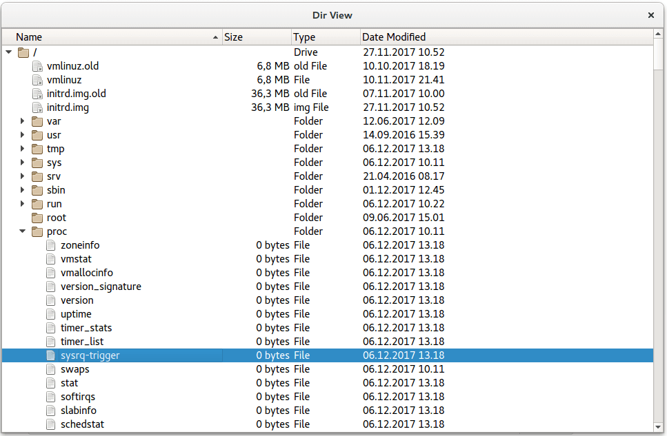

Dir View Example
This example demonstrates the usage of a tree view.
The Dir View example shows a tree view of the local file system. It uses the QFileSystemModel class to provide file and directory information.

QCommandLineParser parser;
parser.setApplicationDescription("Qt Dir View Example");
parser.addHelpOption();
parser.addVersionOption();
QCommandLineOption dontUseCustomDirectoryIconsOption("c", "Set QFileIconProvider::DontUseCustomDirectoryIcons");
parser.addOption(dontUseCustomDirectoryIconsOption);
parser.addPositionalArgument("directory", "The directory to start in.");
parser.process(app);
const QString rootPath = parser.positionalArguments().isEmpty()
The example supports a number of command line options. These options include:
- Application description
- -help option
- -version option
- if the optionc {-c} is specified, the application will not use custom directory options
QFileSystemModel model;
model.setRootPath("");
if (parser.isSet(dontUseCustomDirectoryIconsOption))
model.iconProvider()->setOptions(QFileIconProvider::DontUseCustomDirectoryIcons);
QTreeView tree;
tree.setModel(&model);
Declares model as data model for reading the local filesystem. model.setRootPath("") sets the current folder as the folder from which model will start reading. QTreeView object tree visualizes the filesystem in a tree structure.
tree.setAnimated(false);
tree.setIndentation(20);
tree.setSortingEnabled(true);
const QSize availableSize = QApplication::desktop()->availableGeometry(&tree).size();
tree.resize(availableSize / 2);
tree.setColumnWidth(0, tree.width() / 3);
tree.setWindowTitle(QObject::tr("Dir View"));
Sets layout options for animation, indentation, sorting, and sizing of the filesystem tree.